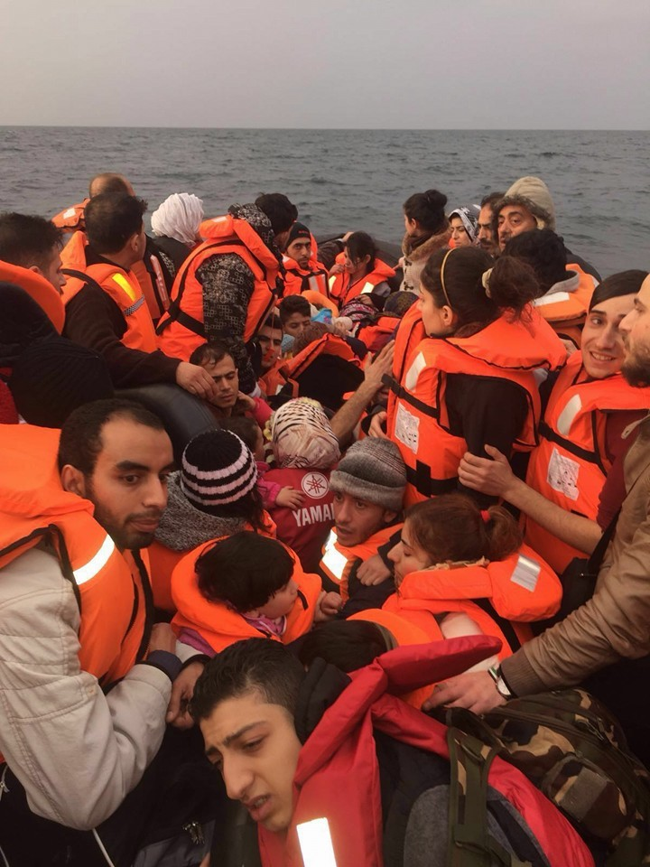
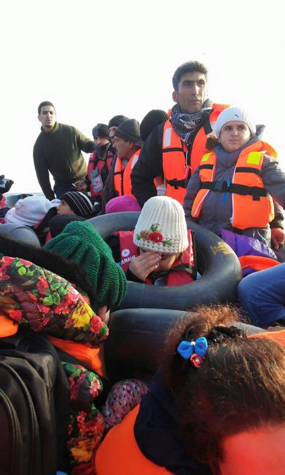

Why do refugees need internet? expand_more
Nowadays, the survival of refugees relief heavily on internet access. Whether by sending their geo-location, updating status
of a hazardous boat trip via in-app messaging services or even social networks, and sometimes also by documenting
the number and identity of travellers on a specific boat through a series of selfie photographs. The function of
a connected mobile phone is crucial and, in many cases, potentially life-saving.
As you can imagine, a reliance upon regular internet services usually demands that the refugees travel as close
to the land as possible.


What is an internet donation? expand_more
Simply put, an internet donation is the agreeable transfer of data allowance from one mobile phone onto another.
When trying to access internet as an alien, one is relying on available GSM and 4G services. These service networks
naturally leave only a minimal amount of data allowance free of charge, if at all. Actual "free" data allowance figures
are subject to change during over-usage in the local carrier network, etc.
We recognize that using the internet today is not simply a leisure activity, like TV or Video games, rather,
it can be crucial more than drinking water. However, it is not recognized by all as vital. We want to fix that.
This is where we need you. Your action comes into aid here. In this case and occasion, we can transfer data
allowance from your local internet network into the refugee in need.
It is not a simple task, but we have created our alternative network in order to carry it through. It is important
to notice that it is not considered, on the grounds of your country, a criminal or a terrorist act on any ground.
The only issue you have to be aware of is the speed sacrifice you are making. These means that technically, after
donating, your download of data online might potentially slow down. However, most users agree that the slowing effect
is minimal to a non-issue for them.